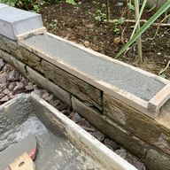

野菜作り
菜園カレンダー
いつ何を植えれば良いかも分かっていない素人が手探りで野菜を育てているが、野菜は時期を逃すと栽培できないため、 野菜作りに必要な作業を行う時期が一目でわかる菜園カレンダーを作ることにした 一般的なツールでは上手く作れず、良い作図ライブラリも見つからなかったため、専用の栽培ライブラリを開発してから菜園カレンダーを作ることになった
菜園マップ
5月の菜園マップ 開発した栽培ライブラリに菜園マップを作成する機能を追加した
現状、栽培区画の座標値を㎝単位の数値で指定する必要がある。
一般的な作図ツール（ドロー系ソフト）で作成する方が楽かもしれない
栽培記録
開発した栽培ライブラリに栽培記録を作成する機能を追加し、作物ごとの栽培記録をポップアップ表示する仕組みとした
花壇のレンガ積み

亀池用のタライを埋めるために庭を掘ると土や石や瓦礫が出てできて処分に困る。
そこで、石や瓦礫をモルタルで固めて偽レンガを作り、偽レンガを積んで花壇を作り土を入れた。
偽レンガを作る時のモルタルレンガ用型枠は3Dプリンタで製作した